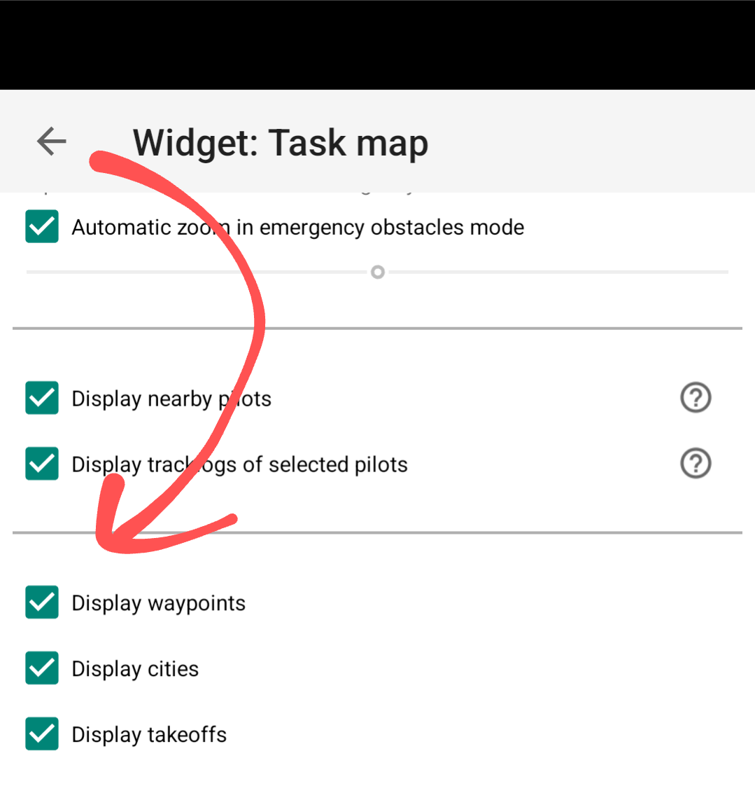
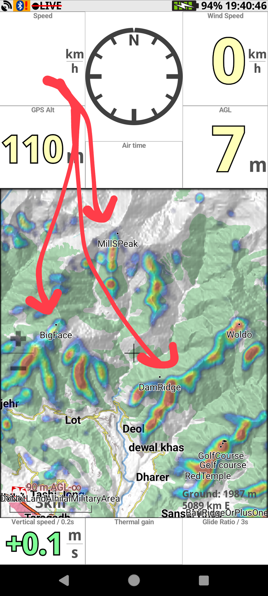

Use Google Earth to create/edit your .kml file.
Convert the .kml file to a .wpt file using this tool.
Import the .wpt file into XCTrack.
How to Import the WPT File in XCTrack
- In XCTrack, go to "Navigation" → "Waypoints / XC Navigation"
- Open "Waypoint Manager" (flag icon)
- Go to the "FILES" tab
- Click "Import waypoint file" (misleading download icon)
- Select your converted .wpt file
- After import, you should see your file (e.g., bir_billing.wpt) with the number of waypoints
- Check the checkbox next to the file to activate the waypoints
Important: Verify Map Display Settings
Make sure your map widget is configured to display waypoints:
- Go to map settings
- Enable "Display waypoints" checkbox as shown below

Expected Result
After completing the import and configuration, your map should display the waypoints as shown below:
